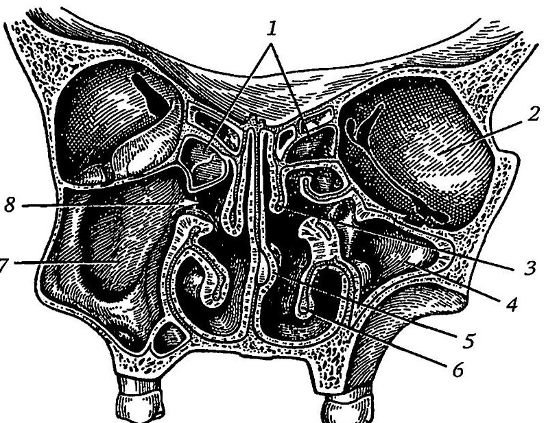
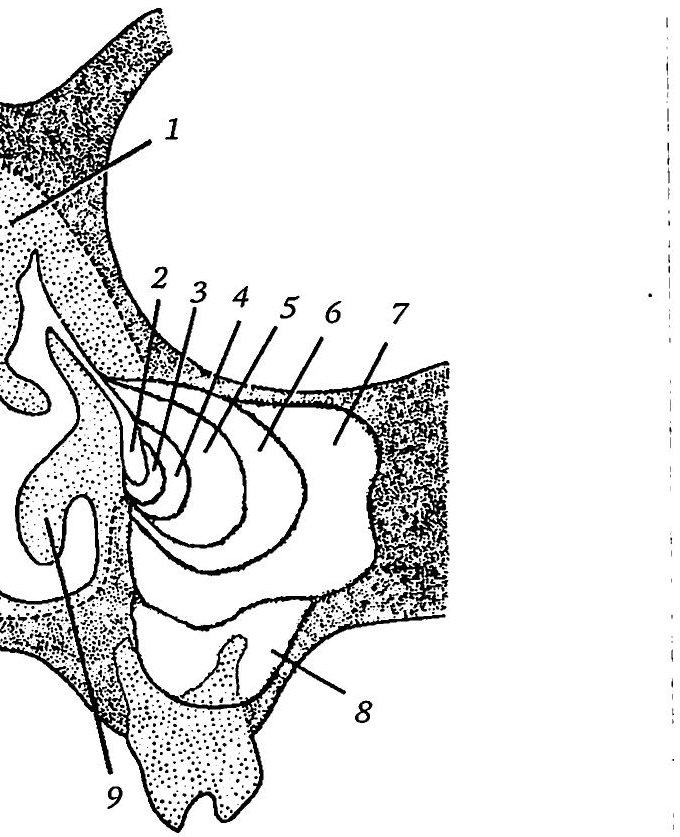

Анатомия и физиология околоносовых пазух
Общая характеристика
Околоносовые пазухи (sinus paranasales; синоним — придаточные пазухи носа) представляют собой воздухоносные полости в костях лицевого и мозгового черепа. Все они выстланы слизистой оболочкой и сообщаются с полостью носа. Слизистая оболочка пазух тонкая и прочно спаяна с надкостницей, кавернозных тел в ней нет, а субэпителиальный слой развит слабо. К основным пазухам относят верхнечелюстную, лобную и клиновидную пазухи, а также ячейки решётчатой кости. Анатомические особенности пазух и варианты их строения играют заметную роль в развитии воспалительных процессов и их осложнений.

Верхнечелюстная пазуха
Верхнечелюстная пазуха (sinus maxillaris) — самая крупная из околоносовых пазух, она лежит в теле верхней челюсти. Её форму сравнивают с усечённой трёх- или четырёхгранной пирамидой, верхушка которой направлена к бугру верхней челюсти и граничит с крыловидно-нёбной ямкой. Вместимость колеблется от 3–5 до 30–40 см³, асимметрия правой и левой пазух встречается нередко.
В пазухе различают пять стенок. Медиальная стенка является частью латеральной стенки полости носа; в ней находится отверстие в средний носовой ход, а спереди к ней прилежит носослёзный канал, в задневерхнем отделе — решётчатые ячейки. Это отверстие (верхнечелюстная расщелина) лежит выше дна пазухи, поэтому отток отделяемого затруднён. Длина расщелины чаще составляет 7–11 мм, ширина 2–6 мм; чем меньше функциональный диаметр соустья, тем дольше пазуха опорожняется. Из-за такого расположения отверстия для лучшего дренирования пункцию выполняют со стороны нижнего носового хода.
Переднелатеральная стенка расположена между подглазничным краем и альвеолярным отростком. В её средней части находится клыковая ямка, где стенка наиболее тонкая; именно здесь вскрывают пазуху при наружном доступе. В толще стенки идут передние верхние альвеолярные сосуды и одноимённые ветви подглазничного нерва. Заднелатеральная стенка соответствует бугру верхней челюсти, а её задневерхний угол близок к задним решётчатым ячейкам и клиновидной пазухе, что позволяет подойти к ним через верхнечелюстную пазуху.
Верхняя стенка тонкая и одновременно служит нижней стенкой глазницы. На ней лежит подглазничная борозда, переходящая в подглазничный канал с сосудисто-нервным пучком; местами костная стенка здесь отсутствует, и нерв с сосудами отделены от слизистой оболочки только надкостницей. Дно пазухи образовано альвеолярным отростком и может быть разделено одной-двумя фронтальными перегородками.

Верхнечелюстная пазуха и зубы
Для клиники важна высота стояния дна пазухи. У взрослых оно лежит на уровне дна полости носа в 39 % случаев, выше в 18 % и ниже в 43 %. У детей до 14 лет дно выше дна полости носа в 85 % случаев; с возрастом доля пазух с низким дном растёт и после 70 лет достигает 67,5 %. Это связывают с нагрузкой на жевательный аппарат.
Корни резцов всегда далеко от дна пазухи, корни малых коренных зубов обычно его не достигают. Если дно расположено низко, альвеолы больших коренных зубов, чаще первого и второго, образуют бугорки в просвете пазухи, а корни отделены от неё лишь тонкой костной пластинкой. По данным ряда авторов, верхушки корней вдаются в пазуху в 27 % случаев. В области бугорков кость может рассасываться, и тогда периодонт контактирует со слизистой оболочкой пазухи, а воспаление легко переходит на неё и приводит к одонтогенному гаймориту.
Другие варианты строения и развитие верхнечелюстной пазухи
При выраженной пневматизации стенки образуют бухты: лобную, скуловую, нёбную и альвеолярную; чаще остальных встречается альвеолярная, реже всех нёбная. Бухты типичны для больших пазух.
Верхнечелюстная пазуха закладывается раньше остальных, у эмбриона в 9 недель. У новорождённого её размеры не превышают нескольких миллиметров, в 2–5 лет она быстро растёт, а окончательно формируется к 14–20 годам, после прорезывания больших коренных зубов. После 30–40 лет начинаются инволютивные изменения стенок, связанные с остеопорозом; потеря зубов усиливает эти изменения и асимметрию пазух.

Лобная пазуха
Лобная пазуха (sinus frontalis) — парная полость между наружной и внутренней пластинками чешуи лобной кости, разделённая вертикальной перегородкой. Её границы сильно варьируют: пазуха может распространяться в надбровные дуги и глазничную часть кости, а иногда доходит до малых крыльев клиновидной кости. Средний объём составляет 3–5 см³, но достигает 12 см³. Асимметрия размеров — обычное явление, полное отсутствие пазухи встречается в 4–13 % случаев.
С полостью носа пазуха сообщается через лобно-носовой канал, который открывается в передней части среднего носового хода. Пазуха имеет форму трёхгранной пирамиды с основанием, обращённым к глазнице. Передняя стенка самая толстая (1–6 мм). Задняя стенка очень тонкая и отделяет пазуху от передней черепной ямки. Нижняя стенка состоит из носового отдела, достаточно толстого, и глазничного, очень тонкого и ячеистого из-за внедрения решётчатых ячеек; она лежит над глазницей и полостью носа, и здесь находится апертура пазухи.
Лобная пазуха при рождении отсутствует: её просвет начинает формироваться в 4–6 лет, до 6 лет диаметр не превышает 1 см, в 9–11 лет пазуха достигает половины окончательной величины, а рост заканчивается к 15–18 годам. Венозный отток происходит в том числе в верхний сагиттальный и пещеристый синусы, а вены имеют анастомозы с венами глазницы и черепа. Поэтому из лобной пазухи инфекция может распространяться в полость черепа как гематогенным, так и лимфогенным путём.
Передняя стенка является местом выхода глазничного нерва через надглазничную вырезку (incisura supraorbitalis), пронизывающую верхний край орбиты ближе к ее верхневнутреннему углу. Переднюю стенку используют для трепанопункции и вскрытия пазухи. Из-за своей толщины она порой представляет большие трудности для проведения манипуляций. Нижняя стенка наиболее тонкая и нередко через нее проникает инфекция из лобной пазухи в орбиту. Мозговая стенка — самая важная, поскольку она отделяет лобную пазуху от наружных частей лобных долей головного мозга и может служить местом проникновения инфекции в переднюю черепную ямку.
Лобная пазуха тесно связана с передними клетками решетчатого лабиринта, являясь как бы их продолжением. Отсюда весьма частое сочетанное воспаление лобных пазух и передних клеток решетчатого лабиринта, распространение остеом и других опухолей из решетчатого лабиринта в лобную пазуху и в обратном направлении. по: Бабияк и соавт., т. 1, с. 55
Клиновидная пазуха
Клиновидная пазуха (sinus sphenoidalis) расположена в теле клиновидной кости и разделена перегородкой на две, чаще асимметричные, части. Соустье каждой половины находится на передней стенке и открывается в клиновидно-решётчатое углубление позади верхней носовой раковины, поэтому отделяемое стекает прямо в носоглотку. Размеры соустья колеблются от 0,5 до 7 мм, окружающая его костная стенка очень тонкая.
Верхняя стенка тонкая и граничит с дном турецкого седла и гипофизом; рядом проходят зрительный нерв, обонятельный тракт и внутренняя сонная артерия, которая в 53 % случаев выступает в пазуху. Эту особенность необходимо учитывать при хирургических вмешательствах. Нижняя стенка самая толстая (3–10 мм) и участвует в образовании свода носоглотки. Латеральная стенка тонкая (1–2 мм) и покрыта твёрдой мозговой оболочкой, в которой лежит пещеристый синус с внутренней сонной артерией, глазодвигательным, блоковым, отводящим и глазным нервами. Через дигесценции слизистая оболочка пазухи может непосредственно соприкасаться с оболочками мозга, пещеристым синусом, зрительным нервом и сонной артерией. Поэтому при воспалении возможны внутриглазничные и внутричерепные осложнения.
Выделяют три типа строения: спонгиозный (20 %) с небольшими пазухами и толстыми стенками, пневмоспонгиозный (40 %) и пневматический (40 %), при котором пазуха заходит за середину гипофизарной ямки, а её тонкие стенки легко повреждаются при переломе основания черепа. У новорождённого пазуха сравнима по размеру с горошиной; она развивается почти всю жизнь, особенно активно до 30–40 лет. К 15 годам пневматизируется передняя треть тела клиновидной кости, к 20 годам половина тела, а задний отдел — лишь в 30–40 лет.
Решётчатые ячейки
Решётчатый лабиринт образован множеством небольших сообщающихся между собой полостей. Обычно их 8–10, но число колеблется от 5 до 14. У новорождённых ячеек 4–5, у детей 3 лет 7–10, а полного развития они достигают к 12–14 годам; наиболее интенсивно растут в первые три года. Различают передние, средние и задние ячейки. Передние и средние открываются в средний носовой ход, задние — в верхний.
Лабиринт граничит сверху с передней черепной ямкой и лобной долей мозга, латерально — с глазницей через глазничную пластинку, поэтому возможны внутричерепные осложнения. Клинически значимы варианты расположения ячеек. Лобная ячейка, выпячивающаяся в просвет лобной пазухи, встречается в 20 % случаев. Передние ячейки иногда доходят до верхней стенки глазницы, а самая задняя (ячейка Оноди) внедряется в клиновидную пазуху или располагается у её бока. Канал зрительного нерва в двух третях случаев проходит по верхнелатеральной стенке решётчатой кости, а задние ячейки могут окружать нерв и заходить на противоположную сторону. Решётчатая пластинка обычно лежит ниже боковых частей лабиринта, что необходимо помнить, чтобы при операции не проникнуть в полость черепа.

Крылонебная ямка
Крылонебная ямка (fossa pterygopalatina), расположенная позади бугра верхней челюсти и являющаяся продолжением подвисочной ямки, является средоточием важных кровеносных сосудов и нервных стволов и имеет многосторонние связи с окружающими ее жизненно важными анатомическими образованиями, в том числе и пазушно-носовой системой. Спереди она ограничена бугристой задней поверхностью верхней челюсти и задней поверхностью глазничного отростка небной кости; сзади она граничит с крыловидным отростком и отчасти — с большим крылом клиновидной кости; изнутри — с наружной поверхностью вертикальной пластинки небной кости. Снаружи крылонебная ямка открыта и переходит в подвисочную ямку между передним краем наружной пластинки крыловидного отростка и задней поверхностью верхнечелюстной кости.
У детей крылонебная ямка представляет собой щелевидное образование небольших размеров, которое начинает увеличиваться с 3-летнего возраста, достигая окончательных размеров к 18–20 годам. К этому времени она имеет в переднезаднем направлении 6,2 мм, в поперечном — 9,1 мм, в высоту — 18,6 мм.
Вверху крылонебная ямка сообщается спереди с глазницей через нижнеглазничную щель; кнутри — с полостью носа через основно-небное отверстие; кзади — с полостью черепа через круглое отверстие. Книзу она переходит в узкий крылонебный канал, ведущий через большое и малое небные отверстия в полость рта.
Крылонебная ямка заполнена рыхлой клетчаткой, через которую проходит вторая ветвь тройничного нерва с отходящими от нее волокнами носонебного нерва и задними верхнелуночными нервами, входящими в мелкие отверстия на передней стенке крылонебной ямки, являющейся одновременно задней стенкой верхнечелюстной пазухи. Здесь же залегает крылонебный узел. Через крылонебную ямку проходят ветви внутренней челюстной артерии — нижнеглазничная, небная нисходящая, клиновидно-небная. Такое скопление артерий в узком пространстве создает опасность возникновения гематомы при так называемой туберальной анестезии, применяемой стоматологами.
В крылонебной и прилегающей к ней подвисочной ямке располагается крупное височное венозное сплетение, в которое впадают одноименные с артериями вены. Из этого сплетения кровь поступает в глубокие ветви передней и задней лицевых вен. Клиническое значение крылонебной ямки заключается в том, что при поражении залегающих в ней чувствительных и вегетативных нервных сплетений возникают многие неврологические синдромы. по: Бабияк и соавт., т. 1, с. 59–61
Аномалии развития околоносовых пазух
Эти аномалии развития возникают в позднем пренатальном периоде, так как их причины заложены в механизмах морфогенеза пазух. К аномалиям околоносовых пазух относят чрезмерную пневматизацию или полное отсутствие тех или иных пазух, нарушения топографических соотношений, часто сопровождающиеся чрезмерным утолщением или истончением костных стенок с образованием врожденных дефектов кости (дегисценций).
К наиболее частым аномалиям относится асимметрия верхнечелюстной и лобной пазух. Отсутствие верхнечелюстной пазухи — явление крайне редкое; так же редко встречается разделение верхнечелюстных пазух полной костной перегородкой на две половины — переднюю и заднюю или верхнюю и нижнюю. Чаще наблюдаются дегисценции верхней стенки верхнечелюстной пазухи, сообщающиеся с полостью глазницы или с нижнеглазничным каналом. Значительная вогнутость лицевой стенки пазухи, иногда сочетающаяся с выстоянием медиальной (носовой) стенки в просвет пазухи, нередко ведет к тому, что при проколе верхнечелюстной пазухи игла проникает под щеку (Лихачев А. Г., 1962). В зависимости от особенностей пневматизации пазухи наблюдаются различной глубины бухты — альвеолярные, надглазничные, небные и скуловые. Значительные деформации верхнечелюстных и лобных пазух возникают при генетических уродствах лицевого скелета и черепа, например при остеодисплазиях черепа и других деформациях мозгового и лицевого скелета, сопровождающих различные генетические нарушения обмена веществ.
Отсутствие лобных пазух, по данным разных авторов, обнаруживается в 13–20% случаев. Асимметрия лобных пазух наблюдается чаще, чем верхнечелюстных, при этом костная перегородка между ними может быть смещена от средней линии на значительное расстояние. Могут наблюдаться многокамерные лобные пазухи, костные трабекулы внутри пазух, пронизанные отверстиями. В некоторых случаях чрезмерно выраженная пневматизация лобных пазух, бухты которых проникают до скулового отростка височной кости, до канала зрительного нерва и бугров лобной кости, обусловливает возникновение неприятных ощущений (распирание, давление, боль в области лба, глазных яблок, височно-скуловой области) при перепадах атмосферного давления или при незначительной заложенности носа.
Весьма вариабельны границы дна лобных пазух и прилегающих к ней клеток решетчатого лабиринта. Как отмечал А. Г. Лихачев (1962), при глубоком внедрении ячеек решетчатого лабиринта они располагаются на одном уровне с лобными пазухами либо позади них. К аномалиям лобной пазухи А. Г. Лихачев относил дегисценции ее костных стенок (чаще глазничной) и отклонение хода лобно-носового канала, которое делает зондирование пазухи затруднительным, а часто и невыполнимым.
Чрезвычайно вариабельны локализация, количество и размеры ячеек решетчатого лабиринта. Поскольку он занимает центральное положение среди остальных околоносовых пазух, его ячейки в процессе развития могут внедряться в соседние пазухи, создавая в них отдельные бухты. Так, передние ячейки решетчатого лабиринта могут распространяться в толщу крючковидного отростка, в валик носа (agger nasi), среднюю раковину или проникать в лобную пазуху. Периорбитальные ячейки лабиринта, располагаясь по поверхности внутренних стенок глазницы, могут распространяться на ее верхнюю стенку, как бы расслаивая ее, образуя плоские, далеко проникающие в латеральном направлении надглазничные ячейки. Часть ячеек решетчатого лабиринта, обращенных к клиновидной пазухе, может внедряться в последнюю, образуя ее верхний этаж, или простираться в малые крылья клиновидной кости. Если ячейки лабиринта внедряются сверху над основной пазухой или распространяются сбоку от нее, оттесняя ее кнутри, они могут вступать в тесную связь с зрительным каналом и влиять на состояние зрительного нерва при воспалении решетчатого лабиринта.
Для всех околоносовых пазух характерной аномалией является наличие дегисценций; не составляет исключения и решетчатый лабиринт. Его дегисценции могут находиться в различных клетках, вследствие чего решетчатый лабиринт нередко сообщается с глазницей, лобной и основной пазухами и, что особенно важно, — с передней и средней черепными ямками.
Размеры клиновидной пазухи также широко варьируют от полного ее отсутствия или незначительных зачатков до значительных размеров, когда она распространяется на соседние костные образования. Толщина стенок, положение и толщина перегородки также изменчивы. На боковых стенках пазухи могут быть дегисценции, что обусловливает соприкосновение слизистой оболочки пазухи с твердой мозговой оболочкой средней черепной ямки, с внутренней сонной артерией и пещеристым синусом, зрительным нервом, верхнеглазничной щелью и крылонебной ямкой. Чрезмерная пневматизация клиновидной пазухи и истончение ее стенок иногда ведут к соприкосновению пазухи с ветвями тройничного и глазодвигательного нервов, а также с блоковым и отводящим нервами. Это при воспалении данной пазухи нередко приводит к осложнениям со стороны указанных нервов, сопровождающимся нарушением их функций (тригеминальные боли, парез взора в соответствующую сторону и др.). Указанные аномалии развития основной пазухи способствуют возникновению риногенного оптохиазмального арахноидита (Киселев А. С. и др., 1994). по: Бабияк и соавт., т. 1, с. 61–63
Кровоснабжение, иннервация и функции
Кровоснабжение пазух идёт из ветвей верхнечелюстной и глазной артерий. Вены имеют анастомозы с венами глазницы и полости черепа, что объясняет внутриглазничные и внутричерепные осложнения при распространении инфекции. Лимфа оттекает в основном через лимфатические сосуды полости носа в поднижнечелюстные и глубокие шейные лимфатические узлы.
Околоносовые пазухи, сообщаясь с полостью носа, оказывают аэродинамическое действие на вдыхаемый воздух: струя отклоняется вверх и достигает обонятельных рецепторов. Воздухоносные полости вокруг органов обоняния, зрения и слуха служат термоизоляторами и поддерживают постоянную температуру. Кроме того, пазухи выполняют резонаторную функцию. Анатомически пазухи образуют единую систему пневматических полостей черепа: при сильном развитии решётчатых ячеек остальные пазухи, как правило, также выражены, а при мелкоячеистом лабиринте они невелики.
Источники
- Гайворонский И. В., Гайворонский А. В., Ничипорук Г. И., Гайворонский А. И. Функциональная анатомия ЛОР-органов. — СПб.: СпецЛит, 2022. — С. 30–51.
- Бабияк В. И., Накатис Я. А., Говорун М. И. Оториноларингология. Руководство. Т. 1. — СПб.: Питер, 2009. — Гл. 3 «Клиническая анатомия и физиология носа и околоносовых пазух»: с. 55, 59–63.
Раздел «Учебник» — справочная теория, не клинические рекомендации. Тактика ведения пациента — по разборам КР.